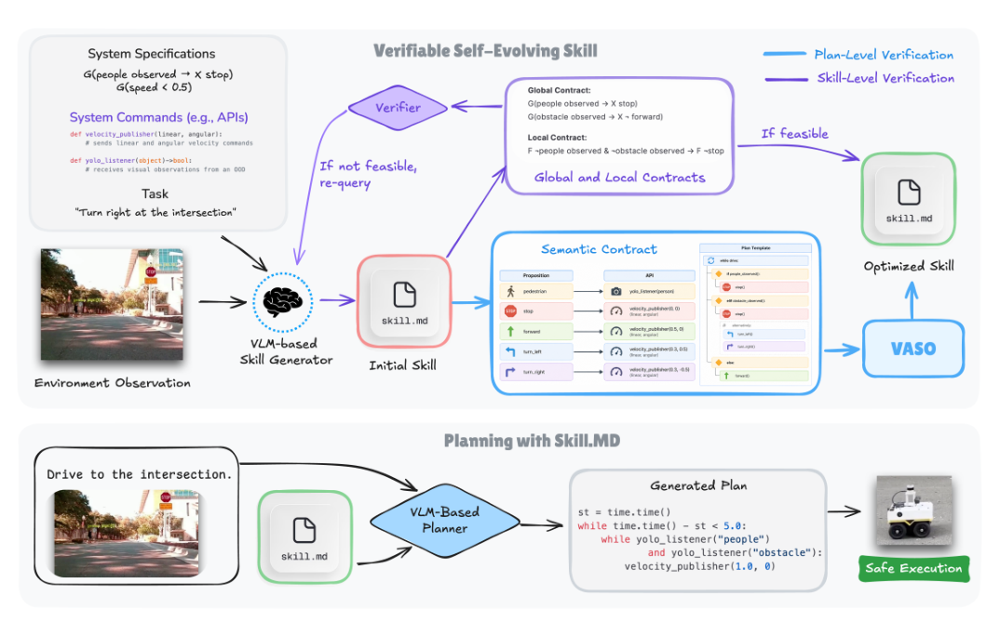
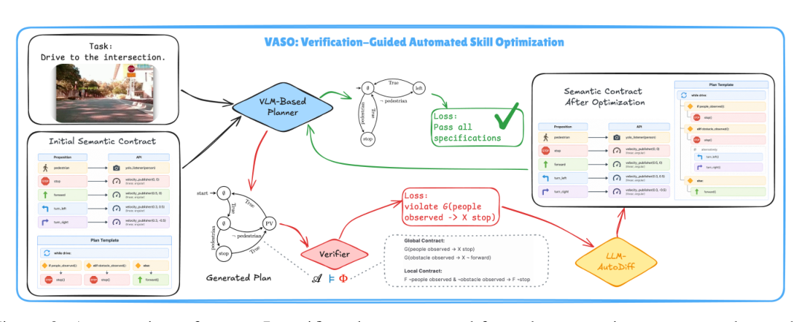
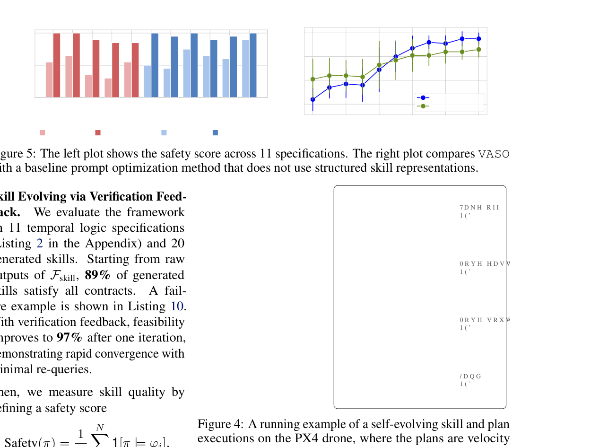
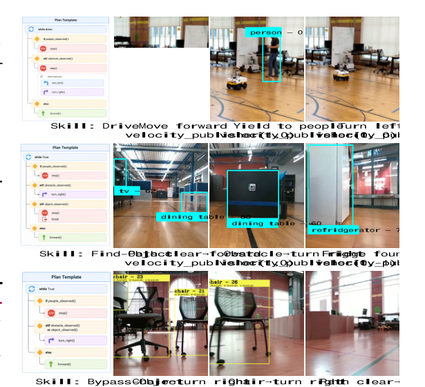

物理 AI 智能体
形式验证
LLM 技能自进化
时序逻辑 LTL
arXiv 2606.05395 · 2026-06
VASO：物理 AI 智能体的形式可验证自进化技能
VASO: Formally Verifiable Self-Evolving Skills for Physical AI Agents
Yunhao Yang*, Neel P. Bhatt*, Kevin Wang, Samuel Tetteh, Zhangyang Wang, Ufuk Topcu · The University of Texas at Austin / Iowa State University（*共同一作）
一句话总结：基础模型让"创造技能"变得廉价，却没让"信任技能"变廉价。现有的技能进化用执行反馈/单测/奖励/LLM 自省来打磨技能，这些信号只能证明"采样过的执行里碰巧没出事"，无法保证技能诱导的计划在未测试条件下满足时序安全契约。VASO 把每个 LLM 生成的技能表示成一个语义合约（形式接口 + 规划器接口），用模型检查器的反例作为优化信号迭代改写技能合约——冻结基础模型权重，在 Jackal 地面机器人与 PX4 四旋翼上达到 97.2% 的规约符合率（不到 100 个优化样本、每技能 20 分钟内）。
01摘要解读
可复用技能正成为具身智能体把开放式指令转化为长时程物理行为的"基本单元"。论文一针见血：基础模型大幅降低了创建技能的成本，却没降低"信任"技能的成本。现有技能进化回路（执行反馈、单元测试、环境奖励、LLM 自省）提供的都是 trace 级证据——只说明技能在采样执行上成功过，而非技能诱导的计划在所有条件下满足时序安全契约。
VASO 的核心设计是一个双接口语义合约：
- 形式接口：把机器人状态、观测、控制命令对齐到逻辑命题，供模型检查器使用；
- 规划器接口：引导可执行行为的生成。
模型检查器先过滤逻辑上不一致的技能合约，再验证技能诱导的计划是否满足全局与局部时序规约；验证失败时，把反例轨迹翻译成"文本梯度"更新可复用技能合约，基础模型权重保持冻结。这是首个把形式验证与自进化 LLM 技能闭环起来的框架：形式反例成为优化反馈，而非仅仅验证一次性计划、调 prompt 或微调权重。
97.2%
形式规约符合率（Jackal + PX4 综合）
11 规约 × 400 计划
评估规模（11 条 LTL 规约、400 个生成计划）
02研究背景与动机（Introduction）
技能可复用 ≠ 技能可信任
一条 prompt 就能产出一个技能描述、代码模板或命令序列，但看起来合理的技能可能藏着执行期安全失效：Jackal 地面机器人可能在"观测到人"之后仍继续前进，PX4 四旋翼可能轻微超出高度或速度包线。对物理 AI 智能体而言，核心瓶颈不再是"造更多技能"，而是让技能以一种可检查、可复用、可验证的方式改进。
软反馈的局限性
Voyager、Trove、AutoManual、Eureka、AutoSkill 等自进化方法用执行结果/单测/奖励/自省来闭环，这些"软反馈"对扩展能力有用，但只是 trace 级证据。在 Jackal 与 PX4 基准中，即使是在执行式反馈下最强技能，仍有超过 1/20 的计划违反形式规约——许多次成功 rollout 无法弥补一次罕见但严重的安全违规。
直接搬形式验证为何难？
一个机器人技能要同时服务几个"互不兼容的消费者"：模型检查器需要符号迁移系统与时序逻辑命题；LLM 规划器需要自然语言/代码式的行为先验；物理机器人需要可执行 API、速度命令或轨迹。
- 若验证只在计划生成后做，它就成了"最后的 pass/fail 过滤器"，无法改进技能本身；
- 若反馈只用于调 prompt 或微调模型，学到的改进没有暴露为一个可检查、可复用、可独立验证的技能工件；
- 缺的正是：让形式反例直接作用于技能本身的表示。
核心洞见：把"验证"变成"优化信号"
VASO 的可验证技能表示，用
命题对齐的标注函数（labeling function）作为两个世界的桥梁：它把技能诱导的行为暴露给模型检查器，同时保持技能对 LLM 规划器可用。于是验证不再只是外部安全检查，而成为技能自进化的优化信号。
三个贡献
- 可验证的自进化技能表示：连接时序逻辑规约、命题对齐的机器人语义、规划器行为模板的可复用结构；
- 形式反例作为技能优化反馈：两级验证（技能级过滤不一致规则 + 计划级识别行为违规），反例转文本梯度精炼技能；
- 物理平台验证：真机达到 97.2% 规约符合率，冻结参数下击败微调基线。

图 1：技能自进化回路总览。任务 prompt 产出一个可复用技能 → 技能级可行性筛查 → 技能诱导的计划针对时序规约做验证 → 验证器反例被翻译成文本梯度来精炼技能。
03方法详解
3.1 问题形式化：技能作为语义合约
技能被定义为三元组 sk = (G, ψ_sk, C_sk)：
- G：全局规约集（LTL 公式），必须始终满足的约束（如"见到人 → 下一步停止"）；
- ψ_sk：局部规则（LTL 公式），描述该技能的预期行为/目标；
- C_sk = (L_sk, C^p_sk)：语义合约——命题对齐的标注函数 L_sk（把执行状态映射到成立的原子命题集）+ 文本计划模板 C^p_sk。
L_sk(σ) ⊨ G ⟺ ∀i, L_sk(σ) ⊨ φ_i （全局规约必须恒成立）
给定任务 prompt τ、系统命令集 S（如 API）、全局规约 G，基础模型 F_skill 生成技能；语义合约交给规划器 F_plan 生成计划 π；计划诱导执行轨迹 σ，标注函数 L_sk 诱导命题轨迹用于验证。
3.2 计划级验证：计划 → 自动机 → 模型检查
VASO 把生成的计划编译成迁移系统 A_π = (S, S₀, T, L)：每个执行状态 σ_t 对应一个状态 s_t，每个可执行行为迁移（API 调用/航点更新）对应一条边，标注函数 L(s_t)=L_sk(σ_t) 给状态打上命题标签。然后做形式验证：
A_π ⊗ M ⊨ G ∧ ψ_sk
其中 M 是表示环境/系统动力学（所有可能执行）的迁移系统。实现上，计划编译成 NuSMV 编码的自动机进行模型检查。
3.3 两级验证 + 文本梯度优化（核心）

图 2：VASO 总览。它验证语义合约生成的计划，并用反馈在闭环中迭代精炼合约。
- 技能级验证（过滤逻辑不一致）：构造组合规约 Φ_sk = (∧_{φ∈G} φ) ∧ ψ_sk，检查是否存在满足它的执行轨迹。通过构造一个"万能迁移系统"（状态集 = 2^AP），把可行性检查转化为可满足性检查，等价地用模型检查器验证 M ⊨ ¬Φ_sk。若成立，说明所有轨迹都违反 Φ_sk、技能不可行，需重新查询 F_skill 精炼局部规则；否则模型检查器返回的反例本身就是"技能逻辑可行"的见证。
- 计划级验证（识别行为违规）：得到逻辑可行的技能后，生成计划并编译成自动机验证 G ∧ ψ_sk。失败时返回反例轨迹。
- 语义合约精炼（文本梯度下降）：验证结果 y ∈ {pass, fail(φ)} 被转换成文本梯度 g（如"违反规约：G(person observed → X stop)"），作为 ∂L/∂C_s 的离散近似，引导 C_sk 的更新：
C_sk^(k+1) = F_skill( C_sk^(k), g, τ ) —— 前向 C→π→A_π，反向 A_π→g→C，交替进行
整个过程完全在 prompt 层操作，无需参数更新、无需梯度回传、无需人工监督（实现上基于 LLM-AutoDiff）。
3.4 一个具体例子（Jackal 地面导航）
命题对齐的标注函数把底层 API 映射到命题——这是自动机验证的前提：
MAX_SPEED = 0.5
def people_observed() -> bool: return yolo_listener("people")
def obstacle_observed() -> bool: return yolo_listener("obstacle")
def speed() -> float: return CURRENT_SPEED
def forward() -> None: set_velocity(linear=0.3, angular=0.0)
def stop() -> None: set_velocity(linear=0.0, angular=0.0)
初始计划模板（if people_observed() or obstacle_observed(): break）会导致机器人一旦检测到人/障碍就永久停在 stop 状态，违反活性局部规则 F(¬people ∧ ¬obstacle) → F(¬stop)。经 VASO 约 10 轮精炼，模板被改写成"见人则停、见障碍则停（或绕行）、否则前进"的正确结构。
04实验设置
实验平台
- Clearpath Jackal 地面机器人：通过速度控制 + 目标检测 API 驱动（velocity_publisher、yolo_listener）；
- PX4 四旋翼无人机：执行 NED 坐标系下的速度轨迹（1 FPS 发布）；
- 模型配置：GPT-5-nano 作 F_skill（技能生成/精炼）、GPT-4o-mini 作 F_plan（规划）。
评估指标
- Safety Score（SS，安全得分）：生成计划满足的规约比例
Safety(π) = (1/N) Σᵢ 1[π ⊨ φ_i]——主指标；
- Task Completion（TC，任务完成率）：在仿真中评估；
- 技能级可行性：生成技能满足所有合约的比例。
规约集（11 条 LTL）
# Jackal 全局：G(people_observed -> X stop)、G(obstacle_observed -> X !forward)、G(speed < 0.5)
# Jackal 局部：F(!people & !obstacle) -> F(!stop)、F(obstacle) -> turn_left|turn_right
# PX4 全局：G(max_altitude < 10)、G(velocity_change <= 1)、G(linear_velocity <= 1)
# PX4 局部：F(v==0 & alt==0)、G(alt==0 -> v==0)、F(v > 0)
对比方法
| 类别 | 方法 | 说明 | SS / TC |
|---|
| 零样本规划器 | LLM+P / ReAct / LLM-Planner | 不加技能表示，直接生成计划 | 79.5/88.3 · 73.3/86.5 · 90.3/89.3 |
| 学习类 | DSPy / RoboInstruct / RLVF | prompt 编译 / 仿真对齐 / 形式反馈微调 | 86.8/87.0 · 82.5/67.0 · 94.3/82.5 |
| flat prompt 优化 | LAD-VF / LLM-AutoDiff | 直接优化自然语言 prompt，无结构化技能 | ≈85%（10 步后平台期） |
| 本文 | VASO（手工命题对齐） | 结构化技能 + 验证反馈闭环 | 97.2 / 85.3 |
| 本文 | VASO（自动命题对齐） | F_skill 自动生成标注函数 | 96.8 / 86.5 |
四个评估问题
- 验证反馈是否真的改进技能？
- 优化技能是否优于优化平铺的自然语言 prompt？
- 优化后的技能能否泛化到未见任务 prompt？
- 自动命题对齐能否替代手工映射？
05实验结果与分析
5.1 验证反馈显著改进技能
从 F_skill 的原始输出出发，89% 的生成技能满足所有合约；加入验证反馈后，1 轮内可行性提升到 97%（最小化重新查询）。比较 100 个初始技能计划 vs 100 个优化后技能计划：优化后技能在 11 条规约、两个平台上达到约 95% 安全得分，同时维持 97% 任务可行性——验证反馈提升的是技能质量，而非一味鼓励保守行为。

图 5：左图为 11 条规约上的安全得分（初始 vs 优化，Jackal 与 PX4）；右图对比 VASO 与不做结构化技能表示的 prompt 优化基线随训练步数的安全得分。
5.2 技能表示 > 平铺 prompt
与 flat prompt 优化方法 LAD-VF 对比：VASO 在 7 步内超过 90% 安全得分，而缺少结构化技能抽象的 LAD-VF 在 10 步后仍在 85% 左右平台期。结论：优化技能是比直接精炼自然语言 prompt 更有效的优化目标。
5.3 泛化与复用
在四个代表性技能（drive / find-object / bypass-object / fly-in-square）上，对每个技能用 5 个优化期见过的 prompt + 5 个同任务族的未见 prompt 评估。优化技能在新 prompt 上达到 92–100% 安全、80–96% 任务完成——可复用的技能无需额外精炼即可迁移。
5.4 自动命题对齐实用可行
自动生成的命题对齐函数与手工映射性能相当（96.8 vs 97.2 安全得分），同时免除了领域专家手工定义底层符号抽象。论文也诚实指出：对齐函数是 AI 生成且未验证的，映射错误（例如把 NED 三维速度误算成二维水平速度）会导致虚假的验证通过——但实测中这类误差导致的最终安全得分退化不足 1%。

图 3：Jackal 机器人上的真实执行，包含多个可验证自进化技能（Drive / Find-Object / Bypass-Object 等）。
5.5 效率-性能权衡
与 LAD-VF（flat prompt 优化）、RLVF（验证反馈微调）、ICL（手工构造满足所有规约的 in-context 示例）对比：仅用 100 个训练样本，VASO 达到最高安全得分，训练时间只有微调方法的 1/4。
5.6 消融（附录 D）
- 结构化技能表示：VASO 7 步超 90%，LLM-AutoDiff 10 步平台期 85%——改进的关键驱动是结构化表示，而非更多优化步数；
- 自动命题对齐：自动标注与手工标注性能持平，免去人工专家；
- 迭代优化：初始技能计划安全得分低且方差大，优化后一致达到 95%；
- 技能中介规划：去掉技能中介改用端到端（零样本或学习类）一致降低安全符合率；最强学习基线 RLVF 仅 93.5%，VASO 97.2%，且计算成本更低。
06核心 Insights
1. "信任成本"与"创造成本"要解耦
基础模型把技能创造的成本打下来了，但安全保证仍是瓶颈。VASO 的关键判断是：
trace 级证据（采样成功）无法覆盖时序安全契约——哪怕 19/20 次成功，剩下的 1 次罕见违规也可能致命。
2. 反例是比"失败"更高质量的梯度
与执行反馈只说"失败了"不同，模型检查器的
反例轨迹精确指出违反了哪条规约、在哪个状态，是可归因的、结构化的优化信号。把反例转成文本梯度，就得到了无需回传、无需微调的"离散梯度下降"。
3. 进化的对象应是"技能"，不是 prompt 也不是权重
调 prompt 把改进藏进了输入，微调把改进藏进了参数——两者都无法作为独立、可复用、可验证的工件。VASO 让改进落在技能合约本身，
一次反例能影响同一技能诱导的所有未来计划。
4. 结构化表示带来收敛速度的质变
VASO 7 步超 90% vs 平铺 prompt 10 步仍 85%：
优化的目标结构（技能 = 全局规约 + 局部规则 + 语义合约）比优化本身更重要。
5. 诚实的失败案例分析才是可信度的来源
论文专门展示了"标注函数算错 NED 分量导致假通过"的失败案例，并量化其影响（<1%）。这提示：
形式验证的可信度下界 = 命题对齐的保真度，是后续概率化校准的方向。
07局限与结论
局限
- 命题对齐未验证：标注函数 L_sk 是 AI 生成且未验证的，映射错误可能使形式保证失效；
- 仅顺序执行：技能在顺序、非并发执行下验证，不扩展到重叠/交错执行；
- 未来方向：为命题对齐引入置信度校准等不确定性信号；扩展到多智能体共享约束下的多技能交互。
结论
VASO 证明了：把技能当作"可解释的规划原语" + "可验证的行为单元"双重身份，就能让形式验证反例成为技能自进化的优化信号。在物理机器人上，它以更少的样本、更低的成本，同时超越了 LLM 规划基线与微调方法。